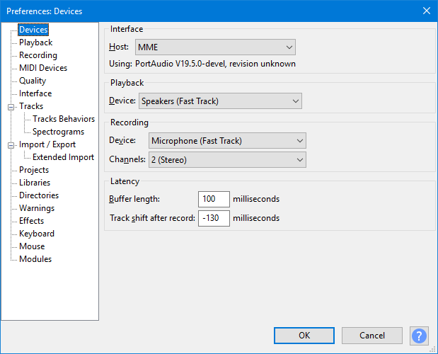

Devices Preferences
- Accessed by: (on a Mac )
- 
- Image of Devices Preferences showing default settings for Host and Channels.
- Click on any other Preferences sections in the above image to read about those Preferences.
Interface
Selects the particular host interface with which Audacity communicates with your chosen playback and recording devices.
Windows: on Windows the choice is between the following host audio interfaces:
- MME: This is the Audacity default and the most compatible with all audio devices.
- Windows DirectSound: This is more recent than MME with potentially less latency.
- Windows WASAPI: This host is the most recent Windows interface between applications (such as Audacity) and the soundcard driver. WASAPI was first officially released in 2007 in Windows Vista. WASAPI is particularly useful for "loopback" recording of computer playback. 24-bit recording devices are supported using this host. Playback is usually emulated. As a result, the playback slider in Mixer Toolbar will only scale the system playback slider's current level up or down rather than directly manipulating that system slider.
On Windows:
- Windows DirectSound may by default have only slightly lower latency than MME.
- Selecting Windows DirectSound or Windows WASAPI and enabling both "Exclusive Mode" boxes in Windows Sound allows Audacity to request audio direct from the device without resampling.
Mac: On Mac the only choice is Core Audio.
Linux: On Linux there is often only one option: ALSA. Other options could be OSS and/or Jack Audio Connection Kit (also known as "Jack" or "Jackd").
Playback
- Device: Selects the device used for playback.
Recording
- Device: Selects the device used for recording.
On Windows, each entry for recording device consists of the input type (such as microphone), followed by the name of the audio device the input belongs to. If you have multiple audio devices, the list will be grouped so that inputs of each device are grouped together. The input level of the selected device can be adjusted in Mixer Toolbar, but device selection is no longer made there.
- Channels: 1 (Mono), 2 (Stereo) or the number of channels that are provided by the drivers of your sound device. On most inbuilt sound devices, especially on Windows, only mono or stereo will be available. For some devices on Windows, choosing Windows DirectSound in "Host" above may be more likely to reveal options for recording more than two channels. On some devices capable of recording more than two channels, an explicit "multi" device may appear in the "Device" dropdown for recording all the channels simultaneously.
Latency
- Buffer length: A "buffer" is a chunk of audio waiting for the computer to process it. At the default 100 milliseconds (ms) setting, the audio will take 0.1 seconds to travel through the soundcard when recording or playing. Decreasing this value means recordings will be laid down on disk with less latency, and playback may respond faster. However, the computer will have to work faster so that it's ready to process the shorter chunks as soon as required. Setting this value too low (for example to 1 ms) will mean the computer will not be able to keep up, and neither recording or playback will work. 100 ms is a safe setting for most computers.
- Track shift after record: On most consumer systems there will be a delay between singing or hitting your note and it being laid down in the recording. When the default Overdub setting is enabled, Audacity will push recorded tracks backwards by 130 ms to compensate for this delay. If your latency is constant, you can adjust this correction value so that your recorded tracks should end up properly synchronized with the other tracks after correction. To set a custom latency value for your system, see the Latency Test page.